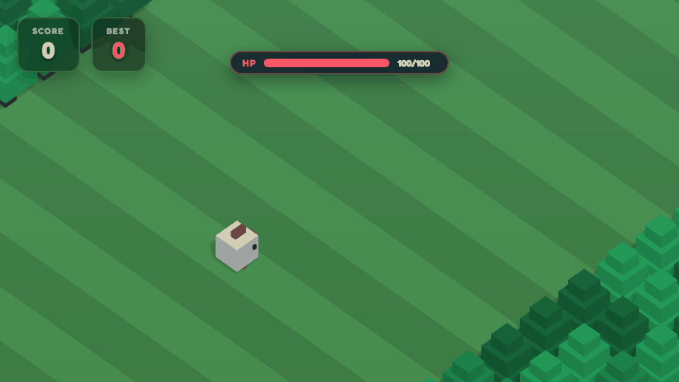

目前可玩
代表最新瀏覽器版本中可直接操作與驗證的規則；本份 GDD 的主文以此層為準。
Game Design Document
Change Log
新增【休閒模式】首次遊玩圖卡規格：以三張圖卡依序教會移動、推擠與失誤回安全區；完成最後一張才可開始遊戲。v0.1 的舊「已看過」紀錄不可直接視為已完成 v0.2 教學。
初始 GDD 版本：整理玩家摘要、可收合實作契約與技術附錄。
Reading Guide
代表最新瀏覽器版本中可直接操作與驗證的規則；本份 GDD 的主文以此層為準。
代表目前版本可見的實驗性功能；會明示是否啟用，不能延伸解讀為完整道具系統。
不屬於目前遊戲規則；只作後續討論，細節集中於「未來玩法機制庫」。
若舊段落、Prototype 註記與規劃內容出現衝突，「現行啟用」狀態與其對應規則優先。
3 分鐘總覽
你和另外 3 名角色一起過馬路。120 秒倒數結束時，站得最前面的人獲勝。被撞或落水不會淘汰，但會回到上個安全區，位置與排名都會退後。
① 目標
排行榜只比較目前位置。跑得快不代表保得住；失誤回退後，名次立刻改變。
② 操作
畫布點擊可向前移動；前方有人時，不是卡住：你會推動連續隊列，讓整排角色一起向輸入方向移動。
③ 判斷
車和火車會撞人；河道只能踩浮木或浮萍；無樹草地是安全區，會記住你的復活位置。
Ch1 / Positioning
判斷下一格、車流節奏、火車警示與浮木去向，就能做出移動決定。
角色會形成隊列；推擠會讓前方角色同方向前進，隊列可以被疏通。
推擠能幫你搶先，也可能把別人送進危險落點；這是同場競速的關鍵。
Ch2 / Casual Core Loop

觀察 → 決策 → 移動／推擠 → 判定 → 更新是唯一閉環；每次結果都更新局勢與檢查點，再回到觀察；120 秒倒數全程運作，歸零時依角色目前位置結算排名。
Ch3 / Push Sandbox
目標格有人時可向同方向推隊列；先完成落地，才判定危險。
旗幟格是檢查點；右側後段才有危險。最多按 4 次就能看見結果。
可移動角色輸入方向後，若目標格被角色佔用，沿同方向收集連續隊列；整條最多 4 名角色。
從輸入角色向前檢查占用者；跳躍中的角色會預約目標格，因此其他角色須等待。隊列完成後，先一次檢查每個目的格的邊界、後退下限、樹、占用與預約；全部通過才由最前端依序開始跳躍。
成功時整條隊列各前進一格，且不重疊；任一目的格不合法時全隊不動。玩家遇到跳躍中的阻擋者時，輸入會保留至落地後重判。
道路、鐵路、河面與動態破洞不會阻止推擠啟動，而是在角色落地後依模式判定危險與復活／結算。現行版本沒有 serverTick 或網路競爭排序。
Ch4 / Hazard Reading
避開車體；火車非閒置時先別踏上鐵路。
只能落在浮木或浮萍；被帶出邊界算失誤。
無樹草地更新較前方檢查點，是下一次重新觀察的位置。
破洞區由入口 → 兩排危險地板 → 出口組成；地格先預警，再暫時成洞，玩家可等待修復或改走其他格。
每波只在兩排危險地板各選一格，兩個洞錯開至少 2 欄；入口不更新檢查點，完整通過出口後才取得新的復活位置。
每一排就是一格：你從最下方的起點安全區第 2 排出發；前進一次仍在起點安全區第 1 排，第二次才進入車道。兩條車道各自判定自己的車；兩條河道各自只能站在自己的浮木上。可前後左右各走一格。
角色完成落地後，進入道路列或火車列即檢查移動物件碰撞。
先以角色碰撞寬度比對同列車體；再於 TRAIN_PASSING 時比對火車。推擠不預先跳過此判定。
【休閒模式】角色命中後進入 Respawning；【挑戰模式】角色依傷害契約扣血或結束。畫面需清楚顯示撞擊來源。
無敵期間不重複受傷；火車警示開始不代表已碰撞，只有火車通過中的實體命中才算。
角色完成落地後位於 RIVER 列，或站在動態浮木上被水平帶動時。
先檢查角色是否覆蓋浮木／浮萍；若覆蓋動態浮木，套用 direction×speed×Δt；否則判為落水。
【休閒模式】角色落水或出界進入 Respawning；【挑戰模式】角色立即 Dead／結算。角色不可停留在無載具河面。
浮木帶動出 |worldX|>8.64 即失誤；跳躍中不做河道承載判定，落地後才判。
【休閒模式】第一個普通危險群後會插入一組 入口 → 危險地板×2 → 出口 的破洞區；之後每完成兩個普通危險群，再插入下一組。玩家接近時才啟動破洞波。
選取兩排危險地板各一格 → 預警 1.2 秒 → 成洞 2.2 秒 → 修復預告 0.6 秒 → 恢復地板；無有效配置時本波跳過。
踩入或被推入已成洞格後，【休閒模式】角色回到上一個檢查點；BOT 以落地時間預測即將成洞的格子，等待修復或重新尋路。
不選安全檢查點、角色占用格、預約格或積分道具格；兩個洞的橫向位置至少錯開 2 欄，且生成前必須確認仍有可行路線。入口不更新 checkpoint，抵達出口才更新。
Ch5 / Casual Multiplayer
【休閒模式】4 人同列起跑，120 秒是唯一自然結算。排名比較目前位置，不是歷史最遠距離，也不是存活時間。
【休閒模式】角色遭車撞、火車、落水或漂出邊界時，回到個人檢查點；復活後 1.0 秒無敵，排名立即依新位置回退。
玩家與三名 BOT 同列起跑，直接進入 120 秒競速；依目前所在列的前進距離即時排名，失誤則回到個人 checkpoint。
公開房、組隊／好友邀請、問號箱、雙待命槽與追擊飛彈均非現行版本功能；設計候選集中於「未來玩法機制庫」，不影響目前兩種可玩模式。
可在可達草地拾取並自動發動；鎖定其他角色中目前位置最前者，經 0.8 秒預警後造成 3 秒暈眩。這是現行 Prototype 規則，不等同於未來道具系統。
畫面上方顯示攻擊者、道具與目標；連續事件會刷新公告，讓多人混戰仍能理解結果來源。
首次進入【休閒模式】大廳時自動開啟；只教會玩家開始第一局所需的三件事，不在圖卡提前說明車道、河道、倒數、排名或模式差異。
遊戲內即時場景
此裝置未啟用即時場景；請在遊戲內查看移動圖卡。
此裝置未啟用即時場景；請在遊戲內查看推擠圖卡。
此裝置未啟用即時場景；請在遊戲內查看重生圖卡。
第 1 張只顯示「下一步」；第 2 張顯示「上一步／下一步」；第 3 張顯示「上一步／開始遊戲」。圖卡開啟期間不可用 X、Esc、進度點或大廳按鈕跳過；只有第 3 張「開始遊戲」可結束流程並進入遊戲。
完成第 3 張後寫入 crossy_casual_guide_seen_v1=1；目前版本沒有 V2 升級或舊紀錄遷移流程。完成後不再自動開啟，但【休閒模式】大廳保留「玩法圖卡」入口供重看。切換【挑戰模式】時，圖卡入口隱藏且未完成圖卡立即關閉；挑戰模式不套用本教學流程。
crossy_casual_guide_seen_v1=1 時不再自動開啟。【休閒模式】開局建立玩家與三名 BOT；排行榜在遊戲迴圈中依所有角色的目前 gridZ 持續更新。
距離較前者排名較高；同距離時維持建立順序（玩家優先，其後依 BOT 建立順序）。不比較歷史最遠距離、到達時間或存活時間。
開場為 z=0, x=[-3,-1,+1,+3]；玩家位於 x=-3，三名 BOT 位於 x=-1,+1,+3。休閒模式失誤後回到個人 checkpoint，回退後排行榜立即反映新的目前位置。
目前版本不實作 reachedTimestamp、playerJoinOrder 或伺服器排序；排行榜只反映本局當下位置。
z=12 復活到 checkpoint z=6：排行榜立即以 6 比較。z=10：列表依固定建立順序顯示。gridZ 不變：名次不變。AI 每 0.22 秒評估，搜尋深度至少 10 格，候選順序固定為前、左、右、後。
排除樹、預約格、2.2 world units 內車體、非 IDLE 鐵路與無載具河格，再套用與人類相同的 push／reservation 規則。
前進無解時，連續 3 次決策無有效前進後退一格；失敗時依固定左右順序重搜，不能左右抖動。
【休閒模式】AI 被推入危險或漂出邊界，套用同一個 checkpoint／排名流程。
定位：此為現行版本已啟用的 Prototype 道具：可拾取、會預警、會造成控制，並顯示戰鬥公告。它不代表問號箱、雙待命槽或其他規劃中道具已實作。
高分追擊落雷生成於可達草地，場上最多 1 個；角色落地拾取後自動發動，不新增技能鍵。
排除自己、死亡與復活中的角色 → 以 gridZ 選目前位置最前的其他角色 → 同位置者隨機選 1 名 → 顯示跟隨目標的 0.8 秒預警 → 落雷判定。
命中造成 3.0 秒暈眩，不擊退、不回檢查點；控制結束後提供 1.0 秒控制免疫。上方戰鬥公告顯示「攻擊者 → 道具 → 目標」並保留 3 秒。
沒有其他有效角色時，道具仍消耗並公告「無可攻擊目標」；目標已受控或處於控制免疫時，落雷可見但不重複套用暈眩。連續公告會重播並重新計時，返回大廳時立即清除。
Ch6 / Challenge Mode
【挑戰模式】角色 HP 100；車撞扣傷害、火車固定 70；非致命傷後 2 秒無敵。
【挑戰模式】角色沒有復活；未站上載具或隨浮木出界，立即結束。
【挑戰模式】鏡頭不會因後退回拉；落後 3.4 格，老鷹抓取後結算。

開局 Zbase=Zcamera=0（格）。每幀先推基礎線，再平滑追隨超前玩家。
Zbase += 0.45×Δt；Ztarget=max(Zbase,playerGridZ-0.5)；α=1-exp(-4×Δt)；Zcamera=lerp(Zcamera,Ztarget,α)。再計算 rear limit 與老鷹。
rearLimit=floor(Zcamera-3.4)；玩家不得選更後方目標。當 Zcamera-playerGridZ≥3.4，鎖輸入、停止一般傷害判定，播放 0.8–1.0 秒老鷹抓取，結束後結算。
deltaTime 先 clamp 至 0.1 秒；跳躍中以 targetGridZ 作前進意圖、以實際 position 作畫面位置。
【挑戰模式】角色在道路或鐵路碰撞判定命中，且未處於無敵狀態。
車撞傷害為 min(60,round(abs(Vcar)×8+10))；火車固定 70；HPafter=max(0,HPbefore-Damage)。
非致命傷進入 2.0 秒無敵／閃爍；HP 歸零播放壓扁並結算。
無敵僅阻止再次傷害，不回復 HP；老鷹抓取不是傷害事件。
【挑戰模式】角色落在無載具河面，或隨動態浮木漂出邊界。
沿用河道承載檢查；失敗後不建立復活候選，直接轉 Dead。
播放落水或漂離畫面，顯示死亡原因並結算最遠距離。
浮萍速度為 0 仍可承載；角色落地前不得提前判為溺水。
工程附錄
本附錄不新增或改變上方已定義的玩法規則；它提供實作、測試與工具所需的唯一技術細節。
GRID_SIZE=1.2；worldX=gridX×GRID_SIZE；worldZ=gridZ×GRID_SIZE；橫向範圍 -6…+6。現行瀏覽器遊戲迴圈：角色更新 → 玩家輸入／推擠 → BOT 決策 → 模式計時、鏡頭與地圖更新 → 障礙／特效 → 動態破洞 → 碰撞判定 → 3D 渲染。這不是伺服器 tick 或網路排序契約。
generateUntilZ=playerGridZ+35、removeWhenRowZ<playerGridZ-25。草地每列至少 3 格可站，至少 1 格連至前方可行入口；生成以 seed、列序、抽樣端點、最多 reroll 次數與 fallback 安全列確保可重現。道路／河道同向且速差過小時，採方向或速度補正；相鄰河道不得皆是浮萍列。
p=clamp(z/220,0,1)。Vcar=lerp(2.0,4.2,p)+random(0,lerp(1.2,2.3,p))；GapGrid=lerp(7.5,4.5,p)+random(0,lerp(4.0,2.5,p))；Ptruck=.15+.20p。VlogRaw=lerp(1.5,3.2,p)+random(0,1)，與前河速差小於 1 時加 1.2；相鄰河反向。火車：首次 idle 3–7 秒、警示 2 秒、Vtrain=38、通過後 idle 4–9 秒。
DynamicHole={Warning:1.2s,Hole:2.2s,RepairWarning:0.6s,WaveCooldown:0.8s,SafetyBuffer:0.15s}
LeaderStrike={Warning:0.8s,Stun:3.0s,ControlImmunity:1.0s,Announcement:3.0s} 是現行已啟用的 Prototype 參數。
目前可玩模式為休閒與挑戰：休閒啟用 120 秒、三名 BOT、動態破洞與即時排行榜；挑戰不建立 BOT、沒有動態破洞，改以相機前推與老鷹淘汰施壓。分數道具與高分追擊落雷啟用；彈簧拳關閉。大亂鬥、問號箱與雙待命槽僅屬規劃，請參閱機制庫。
ActorState={id,appearanceId,isHuman,gridX,gridZ,targetGridX,targetGridZ,checkpoint,movementIntent,inputSequence,reachedTimestamp,isJumping,isRespawning,isInvulnerable,hp,status}
RowState={z,type,direction,speed,trees,vehicles,logs,trainState,hazardChainId,safeZoneId,difficultyP}
Validation